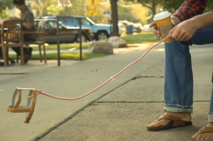

I haven't had many pets in my life. In fact, I've only had two in my youth. Their names were:
Since my wife and I have been married, we haven't had any pets. This is mainly due my acquired cat allergy and her double allergy to cats and dogs. So, we decided to get the most hypoallergenic pet available.
Meet Lewis, the invisible dog!
